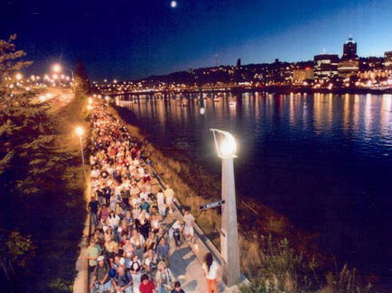
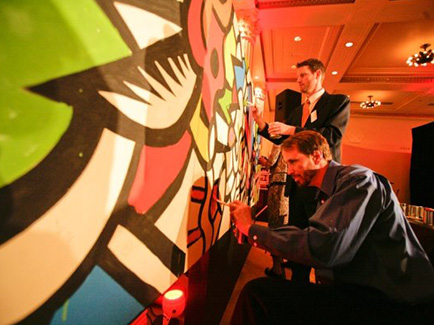
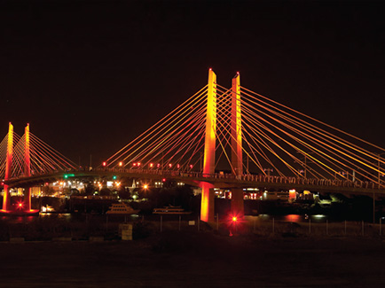
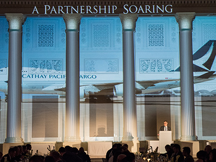
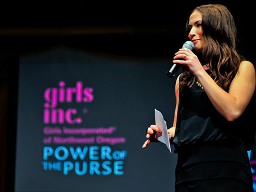
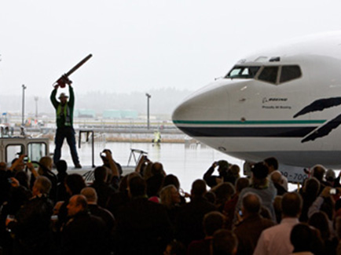

Accolades

Cindy and her team are more than just event planners - they help drive and manage every aspect of our fund raising event to ensure that the guests have a top-notch experience while truly engaging with our mission. Their attention to detail and commitment to creativity are the reasons why we have one of the most unique, mission-driven fund raisers in Portland.
I truly can’t say enough good things about Cindy Thompson and her staff. As we developed and implemented the grand opening of our new MAX Orange Line, she truly became an extension of our staff. She quickly understood the complexities our organization (time, budget, operational difficulties) and thoughtfully proposed solutions along the way to help us achieve the most successful grand opening our agency has ever undertaken. Through it all – she made it look easy with her calm and caring demeanor. She is amazing at what she does. I’m so very thankful and proud to have worked with her on such a landmark event for TriMet.
JC Vannatta, Director of Communications & Marketing, TriMet
Today’s event was one of Alaska’s finest moments. Sincere thanks to the team who made it all happen.
Brad Tilden, President, Alaska Airlines
Every phone call and conversation I've had since Monday has started out with a hearty congratulations for the Randall Children’s Hospital grand opening events. None of this, and I do mean NONE of this would have been possible without the involvement of Cindy and her team. They embraced the pride everyone felt about Randall, and helped us reflect it back for everyone to see. There are no words to express my thanks and gratitude for making all of this possible.
Brian Terrett, Director Public Relations, Legacy Health
For our Centennial year, the City wanted to honor the past, celebrate the present, and imagine the future of Lake Oswego. Cindy and her team helped us take the year’s events to a whole new level. We couldn’t have done it without their vision, experience, and creativity. Plus, they were simply a joy to work with!
Kim Gilmer, Director of Parks & Recreation, City of Lake Oswego
Experience

Non-profit Events:
- Power of the Purse fundraiser for Girls Inc. Pacific Northwest
- Wild Arts Festival: Benefit for Portland Audubon Society
- In the Garden of Artistic Delights: Benefit for RACC: Regional Arts & Culture Council
- Equity Foundation: BENT: A Hallow’s Eve
Community Events:
- Tri Met Orange Line/Tilikum Bridge opening events
- Lake Oswego Centennial Festival events
- Green Means Go: The Opening of Tri Met’s Green Line
- Under the Autumn Moon Festival
- Eastbank Esplanade Grand Opening
- Illuminata Parade of Light
Grand Openings:
- Randall Children’s Hospital
- The Nines Hotel
- Hilton Executive Tower
Other Noteworthy Events:
- Runway on the Runway: Portland Timbers/Alaska Airlines Jersey Reveal
- Cathay Cargo Inaugural Launch
- Urban Unveiled Bridal Show
- Tektronix Technical Excellence Banquet
- Arlington Club Centennial Celebration
- Northwest Airlines Inaugural Flight to Amsterdam Event